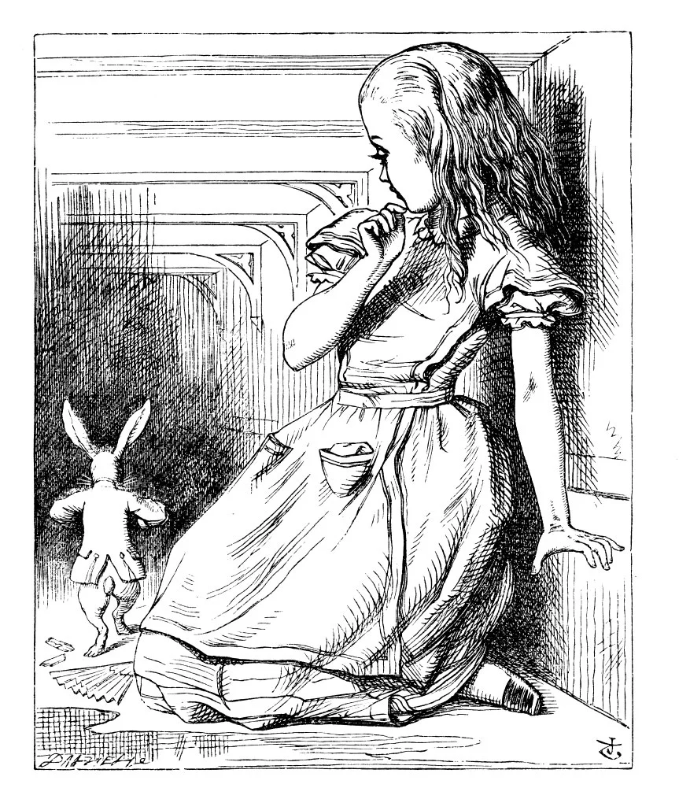
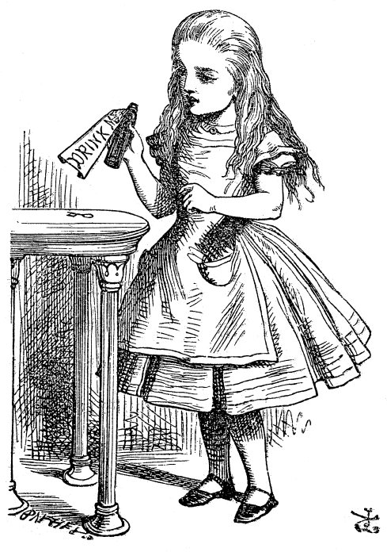
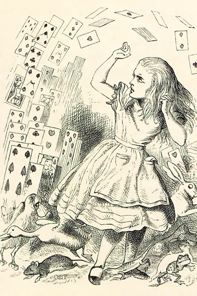

Top
Research
My current interest is homological mirror symmetry(HMS) from derived formal geometry and microlocal analysis. In these notes below is some speculations and calculations. My research proposal is little broad, so I split it into two sections.

On Homological Mirror Symmetry I
Beginning from Nadler-Zaslow, I conjecture existence of methodology of generalization of higher Fukaya category of
n-shifted cotangent bundle over some stack, whose derived Lagrangian intersection induces Fukaya category of any Calabi-Yau ,
and positive dimensionality of nc fp dg-manifold inside Fukaya category to discuss intersection theory in virtual language.
[link]
On Homological Mirror Symmetry II
I conjecture the generalization of sheaf quantization to Fukaya-Seidel category through Fedosov method of deformation quantization
or deformation quantization of matrix factorization, which induces Lie groupoid, controlling derived Lagrangian foliation,
while I also consider perverse schober interpretation of Fukaya-Seidel categeory, and Riemann-Hilbert correspondence of derived foliation.
[link]
Exposition
This is a list of expositions previously shown to other people or intended to be distributed in the future.

(Fall 2022) Cheat Cheet Mirror Symmetry
Marc Gross’s tropical/toric geometry and quantum cohomology for mirror symmetry. It’s for exam for PhD Candidate.
[link]
(Fall 2022), Intro to Geometric Satake Correspondence
Grand relationship among AG, RT, and NT.
[link]
(Winter 2019) Brown Representability
Introducing Brown representability in triangulated category. It’s bachelor’s thesis.
[link]
Junk

Below is the list of materials not necessarily relevant to the most recent research, but I’m still very interested.
Perhaps, junk will turns to be a gem.
Apery diffyq in quantum Satake counting quantum connection through its spectrum,
and I define equivalent in Navier-Stokes through connection form and its quantization.
NSE features multi-variate calculus with viscosity.
[link]
AdS/CFT
AdS/CFT claims AdS conformal boundary corresponds to CFT, called holography.
AdS/CFT induces Ryu-Takayanagi’s quantum-entanglement,
Sasaki-Einstein models AdS space, while CFT generates a variety of non-linear PDE including relativistic Navier-Stokes equation,
and vertex operator algebra if , while 4d CFT derives Higgs bundle through Kapustin-Witten, whose S-duality is D-module.
Spin(7) Geometry and M-theory
M-theory is a generalization of -superstring theories type I,IIA,IIB,SO(32),heterotic,E8xE8, while simplifies perturbation effect.
M-theory consists of holonomy in -dimensional space. Joyce conjecture claims an extraction of symplectic structure from ,
by associative 3-form as an analogue of Calabi-Yau 3-fold. Typical strategy is deformation and wall-crossing formula.
What’s more, ALE space and Fourier-Mukai.
Abstract Algebra
Graduate abstract algebra is typically commutative ring, matrix or Lie theory, not many associative algebra,
and I’ll consider quantization and deformation for quiver algebra, Hecke algebra, Cherednik algebra etc.
Categorification of associative algebra might be interesting and more abstractly quiver .
is abelian category but not symmetric monoidal, while is.
Is there any categorification of Dynkin/non-Dynkin diagram? [link]
Anabelian Geometry
Solution of quintic 1: Klein’s icosahedral method and 2: p-adic henselization, and different Galois groups solving the same equation.
I don’t know whether this is NT or algebraic geometry, or perhaps deeply rooted in set theoretical questions.
Grothendieck Teichmuller. Hod conejecture.